火眼（Gotcha） 使用帮助文档（v1.0.0.0）简介安装基本功能应用搜索进程搜索剪贴板搜索Web搜索引擎搜索搜索资源管理器窗口中的文件普通文件搜索和文件内容搜索执行命令快速计算Windows设置项搜索文档内容搜索超级搜索运行脚本火眼（Gotcha）工作流（Workflow ）什么是工作流？如何创建工作流？以ip工作流为例：运行工作流常见问题火眼（Gotcha）是否可以离线工作？如何备份我的 火眼（Gotcha）设置？火眼（Gotcha）的工作流（Workflow）是否免费？如何反馈BUG 或是 提交新的想法和需求？
火眼（Gotcha）是 Windows 上的生产力工具，允许你通过键盘快速搜索、执行命令、启动应用、管理剪贴板、创建自定义工作流等。它极大地提高了工作效率，减少了鼠标操作。
官网链接：火眼（Gotcha）
打开 火眼（Gotcha）官网 并下载最新版。
运行下载的 .exe 文件安装程序。
启动 火眼（Gotcha）即可开始搜索。
火眼（Gotcha）使用符号 > 作为搜索执行符，是整个软件的核心字符。
按下 Win + Y 打开 火眼（Gotcha）界面，输入关键字即可搜索应用。搜索的范围包括开始菜单、程序目录、用户桌面和环境变量中可执行程序和快捷方式。目前拼音搜索和首字母搜索只支持应用搜索，因为拼音搜索和首字母会减缓搜索速度。
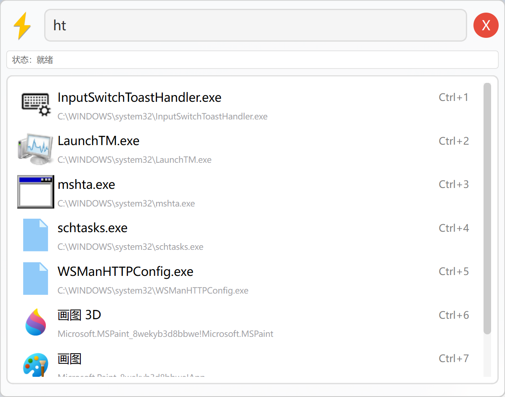
使用pi>前缀即可开启进程搜索，其中pi为搜索功能前缀，>为搜索执行符。比如，搜索chrome，输入pi>chrome即可。
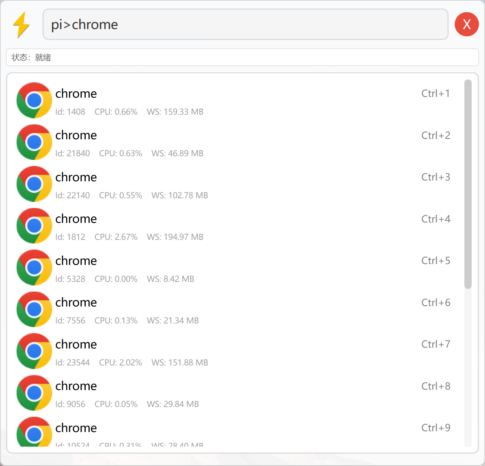
使用cb>前缀即可开启进程搜索，剪贴板搜索可以搜索火眼（Gotcha）启动以来的剪贴板历史。注意：程序重启后，重新开始记录剪贴板历史。
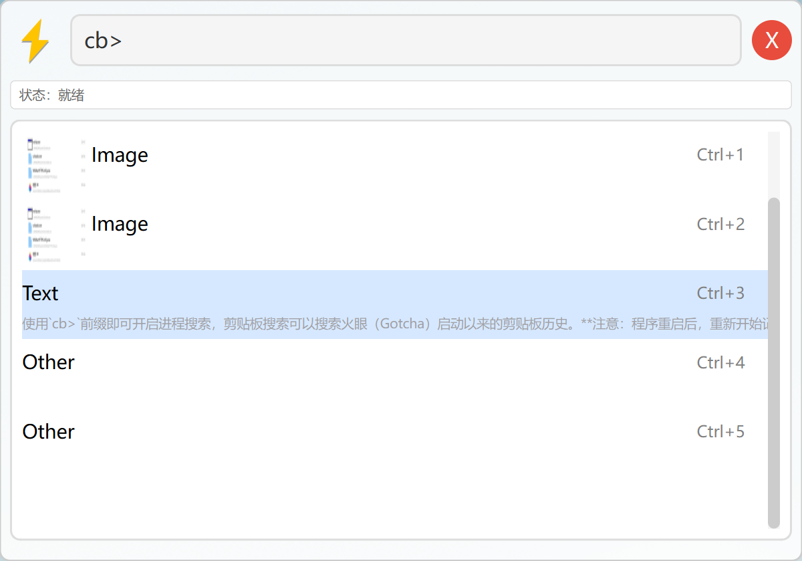
使用s>前缀即可开启进程搜索，例如搜索s>火眼，目前还只支持作者常用的搜索引擎，如果需要其他搜索引擎，可以使用工作流（Workflow）功能自由创建搜索功能。
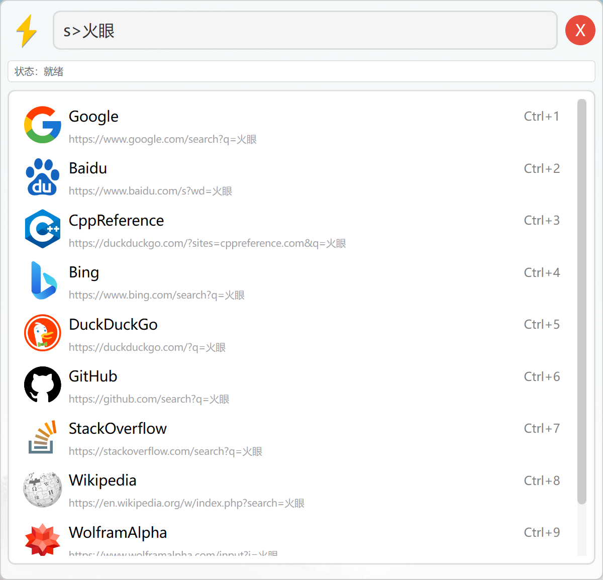
使用sf>前缀即可开启搜索资源管理器（explorer.exe）窗口中的文件，在打开窗口比较多的时候，使用此功能可以方便的找到想要的文件。
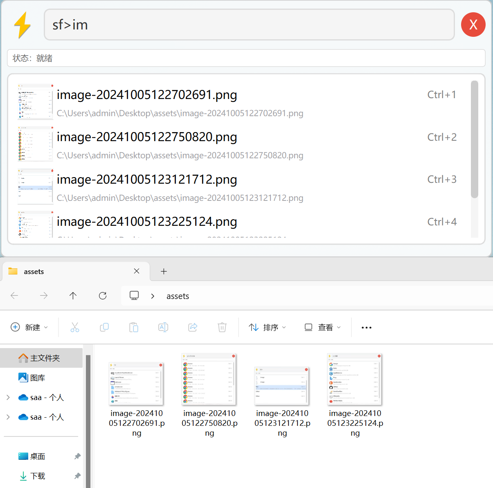
使用f>前缀即可开启普通文件搜索，普通文件搜索目录需要通过配置选项设置，可以添加包含路径和排除路径。
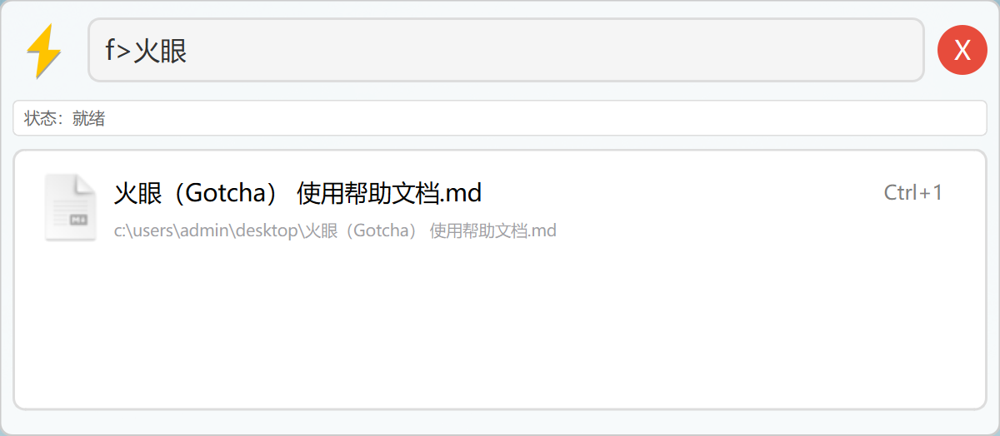
使用in>前缀即可开启文件内容二进制搜索，搜索路径依然是通过配置选项设置，与普通文件搜索相同。
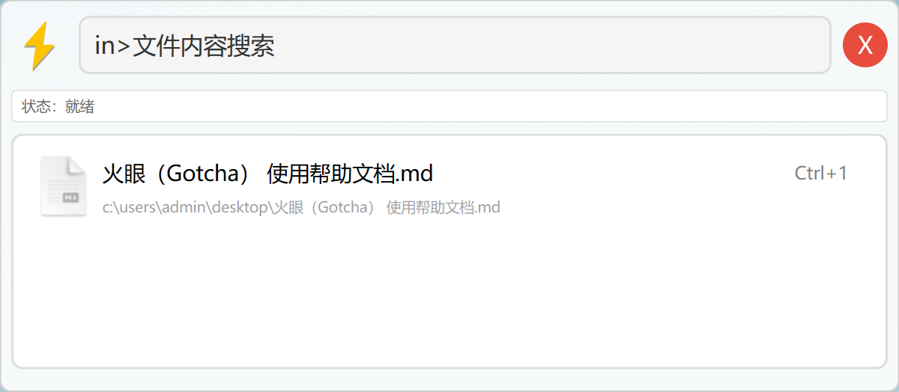
使用cmd>前缀即可执行cmd命令，输入cmd命令后需要输入>执行命令，cmd命令支持命令行参数。例如：cmd>ipconfig /all>
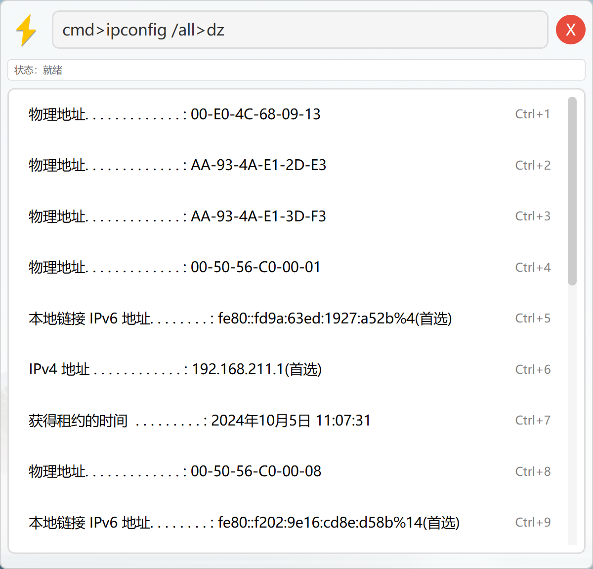
使用calc>前缀即可开启计算器功能，输入数学表达式，火眼（Gotcha）会自动计算结果。例如：
calc>5 * 8 + sin(1) - s2i('0x10')
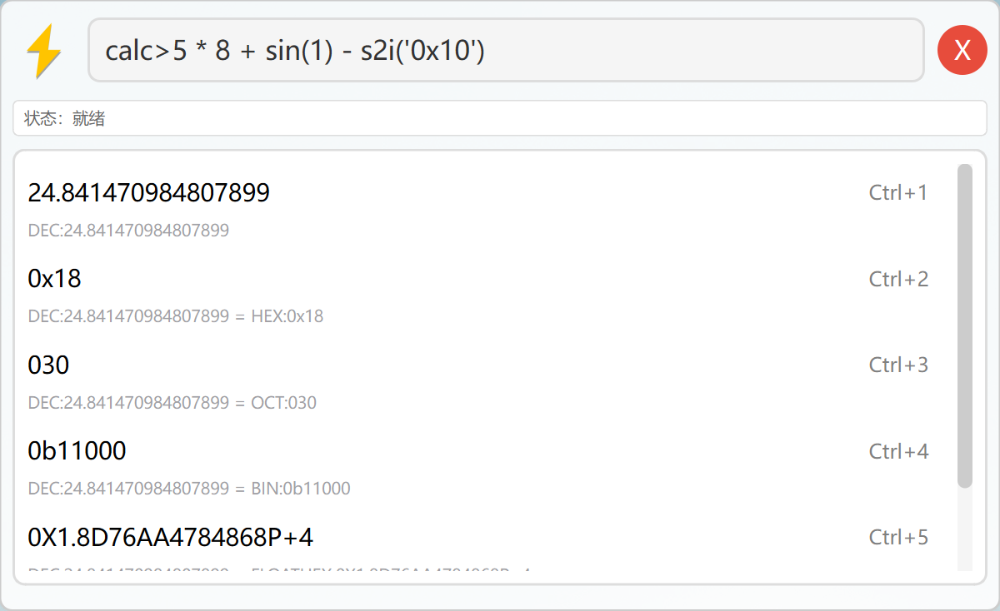
支持的函数包括：
xxxxxxxxxxabs, avg, ceil, clamp, erf, erfc, exp, expm1, floor, frac, hypot, iclamp, inrange, log, log10, log1p, log2, logn, max, min, mod, mul, ncdf, pow, root, round, roundn, sgn, sqrt, sum, swap, trunc, equal, not_equal, acos, acosh, asin, asinh, atan, atan2, atanh, cos, cosh, cot, csc, sec, sin, sinc, sinh, tan, tanh, deg2rad, rad2deg, deg2grad, grad2deg
使用st>前缀即可开启Windows设置项搜索，例如st>xz。
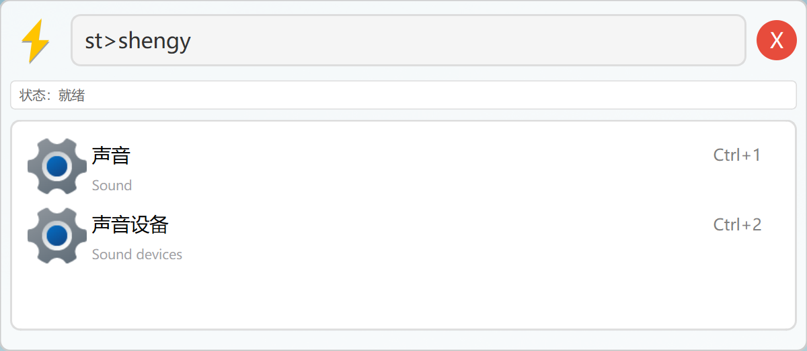
使用doc>前缀即可开启文档文件内容搜索，目前支持Word、Excel、PowerPoint文件以及PDF搜索，注意Word、Excel、PowerPoint的搜索借助MS Office能力，需要安装Office，PDF搜索根据文件大小可能会比较慢。
使用ss>前缀即可开启超级搜索，会使用管理员权限运行searchfileserver服务，该服务能力类似everything，对NTFS文件系统做全盘扫描搜索，目前暂不支持配置搜索盘符，所以盘符都会进行索引。
目前支持执行脚本的类型包括QuickJs，Python和PowerShell，其他脚本包括NodeJs还在计划当中。
使用qjs>前缀即可开启执行QuickJs脚本，QuickJs为火眼（Gotcha）内置脚本引擎，可以在不依赖任何第三方库的情况下，执行简单的JS脚本操作。当然也支持一些基本的文件操作（QuickJs默认支持），后续内置功能陆续更新。
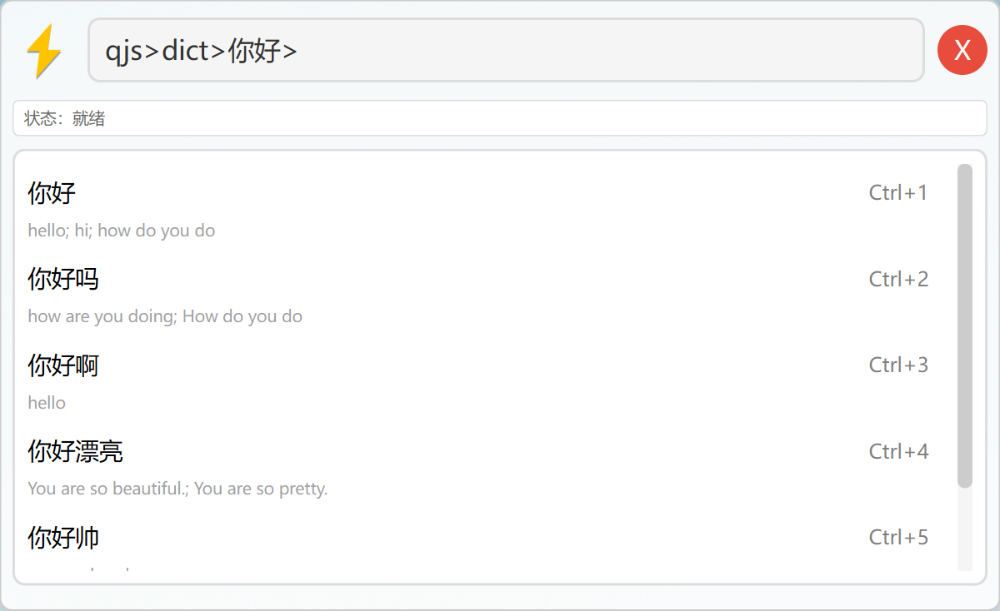
使用py>前缀即可开启执行Python脚本，Python脚本非内置引擎，依赖Python312.dll（需要安装Python3.12），因为是依赖第三方安装，所以pip安装的包都可以使用。Python脚本对应的文件夹如果存在requirements.txt文件，火眼（Gotcha）启动的时候会优先安装依赖包，因此Python是比较好的脚本传播选择。
xxxxxxxxxxpy| dict.py|\---dictrequirements.txtdict\requirements.txt:requests==2.32.3
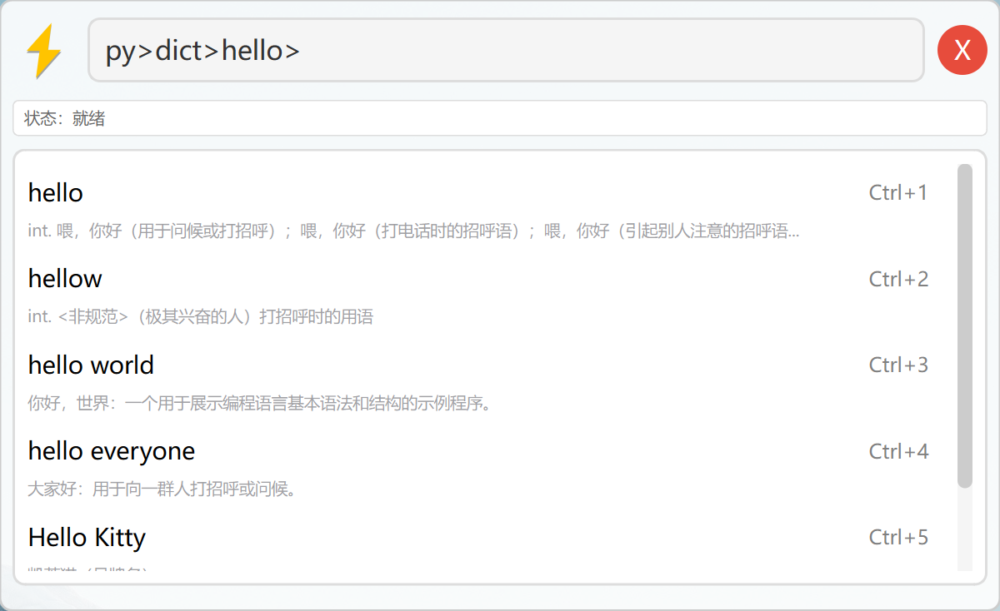
使用ps>前缀即可开启执行PowerShell脚本。因为PowerShell是Windows内置脚本，所以基本上等于内置脚本。另外因为PowerShell支持.net和COM的调用，所以理论上可以完成一些复杂的功能，只是编写脚本不如Python方便。
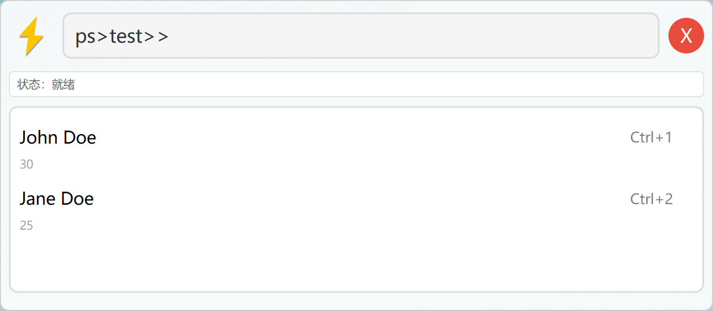
三种脚本的运行方式为：
xxxxxxxxxx(qjs|py|ps)>(script name)>(script args)>(search pattern [optional])
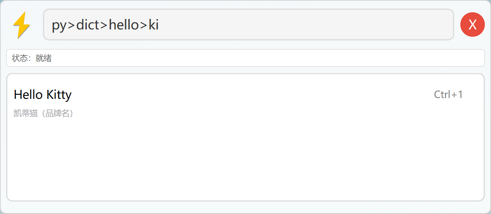
工作流是 火眼（Gotcha）最强大的功能之一，允许用户通过自定义的操作流程自动完成多项任务。它可以用来启动一系列应用、进行复杂搜索、执行脚本等。
打开 火眼（Gotcha）设置。
点击左侧的 "工作流（Workflow）"。
点击新建工作流。
按照需要添加触发器、操作步骤（如运行脚本、打开文件等）。
请注意，选择工作流节点有两种状态，蓝色是选择节点，也是起始节点。红色是结束节点只用于连接节点使用。
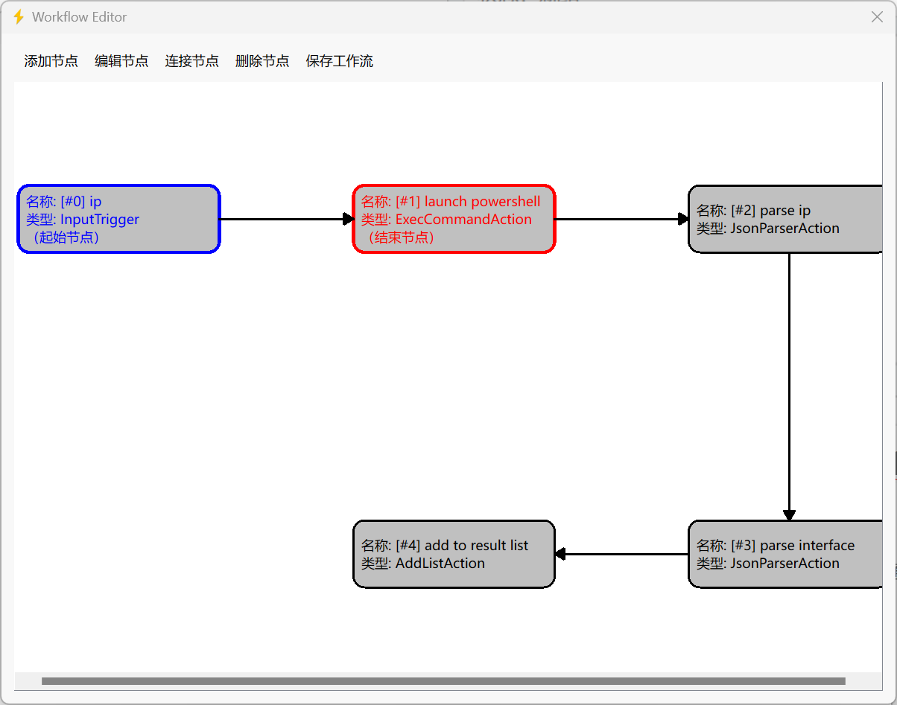
首先创建触发器，触发器是所有工作流的起点，需要设置工作流的名称和前缀。注意前缀非常重要，在运行工作流的时候需要用到。
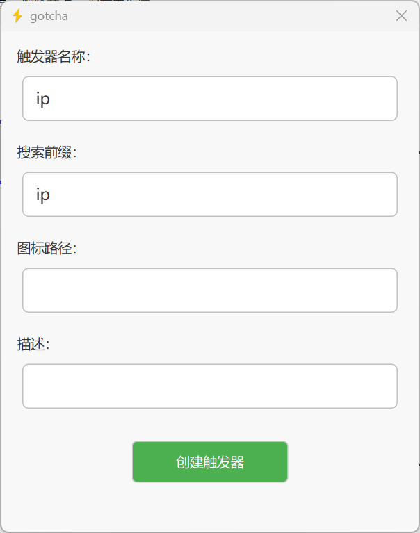
创建所需要的行动节点，例如在ip这个工作流中需要执行PowerShell命令。
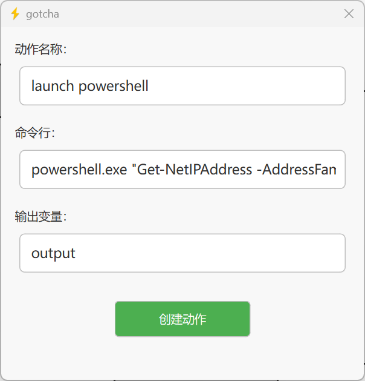
接着需要解析执行命令的结果，因为上一个节点输出的变量为output，所以需要解析的变量为${output}。这里用到了一个非常重要的组件Json解析器，可以通过类似XML的XPath解析Json。在例子中命令行返回的是一个Json数组，通过/[*]/IPAddress这个查询路径，告诉解析器遍历Json数组中所有的数组，并且输出IPAddress的值到ip_addresses，ip_addresses最后得到的也是一个数组。
xxxxxxxxxx查询路径使用方法：/[*]/target - 选择所有数组中的target Key/[5]/target - 选择数组第5个target key/[@'attr1'=='value1', @'attr2'<'value2']/target - 通过Json对象中的某个key的值，过滤对象，并且输出符合条件的target
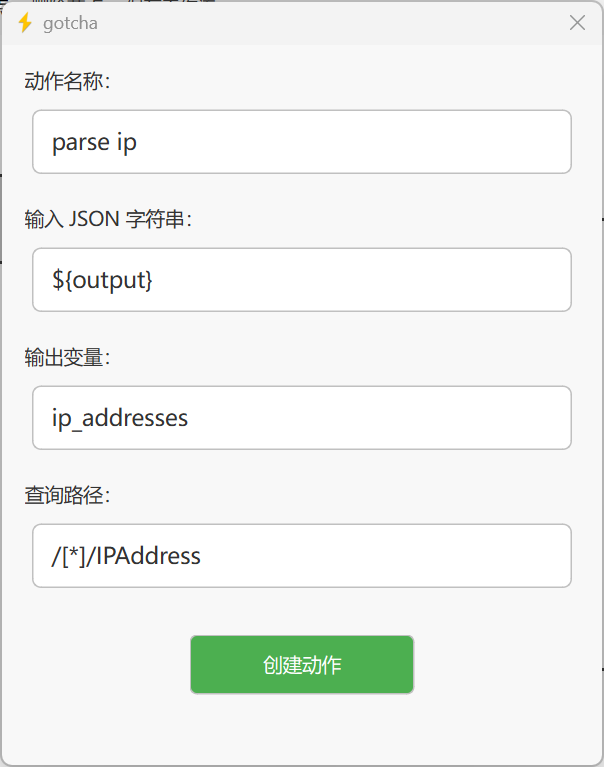
输出到列表，将${ip_addresses}和${interface_aliases}作为主信息和辅助信息输出到结果列表。
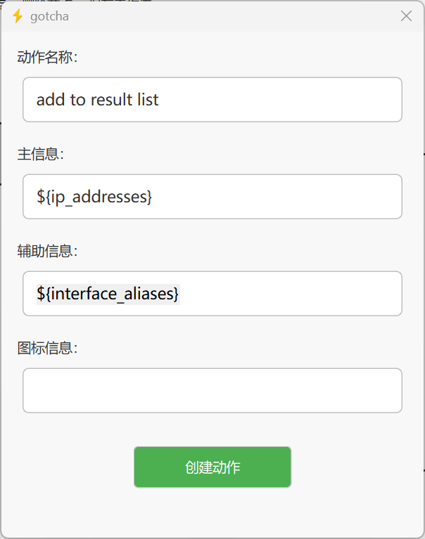
使用wf>前缀即可开启执行工作流，整体输入为：
xxxxxxxxxxwf>(workflow name)>(input [optional)>(search pattern [optional])
其中workflow name为工作流名称，input为输入给工作流的参数，是可选的，其他工作流节点可以通过${input}变量获取，search pattern是搜索结果过滤。
例如wf>ip>>12：
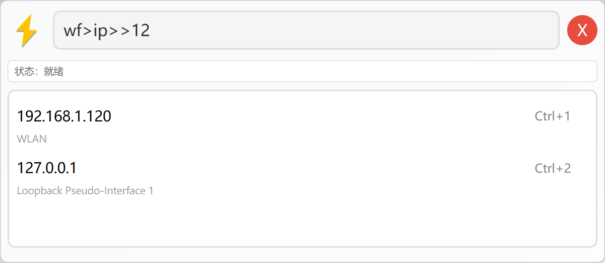
如果需要查看所有工作流可以通过wfl>查看：
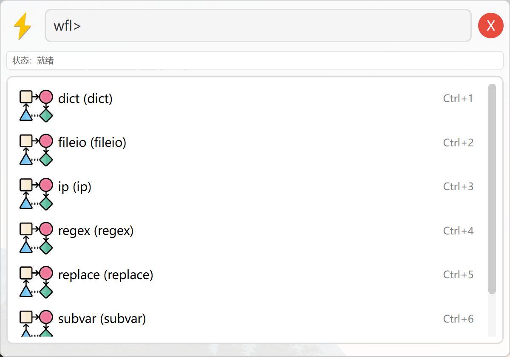
工作流的相关例子均可以在安装目录的workflows文件夹下找到。
是的，大多数 火眼（Gotcha）功能在离线状态下都可以正常工作，但一些在线搜索功能（如互联网搜索）需要网络连接。
您可以通过 火眼（Gotcha）设置（Settings）中的打开 Config.toml 另存为备份文件。
是的，火眼所有功能完全免，包括Workflow。
您可以通过 moderncpp[at]163.com 这个邮箱联系到我。